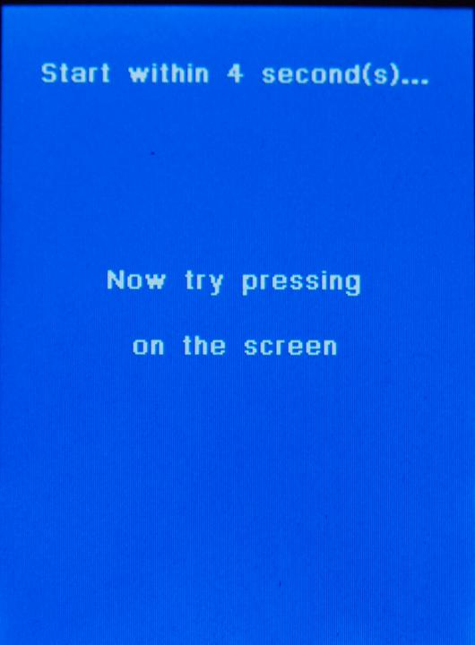

| Quick Start Tutorial |
|  |
You can press anywhere on the
screen with in the next 4 seconds to see white spots drawn where you are
pressing. If you do not press, then this screen will go away with in 4 seconds. Pressing anywhere in the screen starts the timer all over again. Go ahead an press (use your mouse for this tutorial instead of your figure) anywhere to be taken to the next screen |